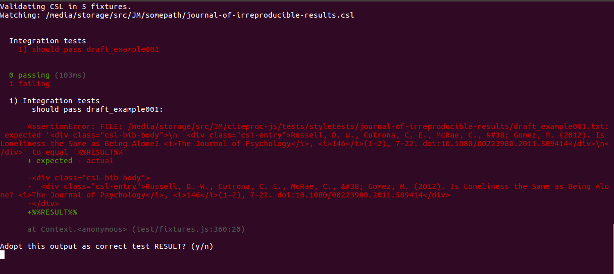
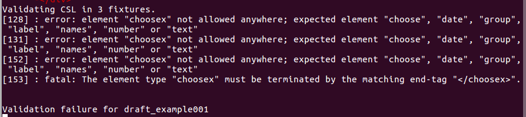

Getting started

Introduction
The Citation Style Language (CSL) is a powerful machine-readable schema for describing citation formats. The citeproc-js processor is a JavaScript implementation of CSL, with extended features to support legal styles and multilingual citations. This chapter explains how to obtain the processor sources and test the installation.
System requirements
The items below are required to download and test the processor. In deployment environments, only JavaScript is required.
gitNeeded to fetch a clone of the
citeproc-jsrepository on GitHub.node.jsAny recent-ish version should work. Version 7 is used for automated testing.
mochaInstall Mocha globally with
npm install --global mocha.javaThis is used to perform schema validation. Browser extension is not required, a basic command-line install is all you need.
Fetch the sources and install development dependencies
Use this incantation at the command line to fetch the source code of the processor and its dependencies:
git clone --recursive https://github.com/Juris-M/citeproc-js.git
If you forget the --recursive option, you can follow up by
fetching the submodules with this:
git submodule update --init --remote
Enter the directory and set up the test framework:
cd citeproc-js
npm install
npm link
You can now run the test script:
cslrun
When run without options, or with the -h option, the script returns a help text:
Usage: cslrun <-s testName|-g groupName|-a|-l> [-S styleName|-w cslFilePath|-C cslJsonFilePath]
- Testing options (exactly one MUST be used):
- -s testName, --single=testName
Run a single local or standard test fixture.
- -g groupName, --group=groupName
Run a group of tests with the specified prefix.
- -a, --all
Run all tests.
- Options for style development:
- -w, --watch
Path to CSL source file watch for changes, relative to repository root.
- -U, --update
Update style tests from collection in JM Style Samples.
- -k, –key-query (used with -w)
When tests fail, stop processing and ask whether to adopt the processor output as the RESULT. Useful for rapidly generating tests for existing styles.
- -A, --abbreviations
- Path to abbreviation files, such as a clone of jurism-abbreviations:
- -S, --style
Override name of test set. (Allows use of tests not orginally composed for the CSL file designated by -w)
- -C, --compose-tests
(Discontinued. Open a collection in JM Style Tests and use the -U option instead.)
- Miscellaneous options:
- -F, --final
Use the published-items library (default)
- -D, --draft
Use the submissions library
- -c, --cranky
Validate CSL in selected fixtures instead of running tests.
- -O, --once
Use with the -w option. Exits immediately after running tests.
- -N, --novalidation
Do not validate before running tests.
- -b, --black-and-white
Disable color output
- -r, --reporter
Set the report style. Default is “landing.” Built-in options are: spec, dot, min, progress. If installed via npm, nyanplusreporter (as “nyan”) and mocha-spectrum-reporter (as “spectrum”) are also available.
- -l, --list
List available groups and styles.
Run the script with the -a option to run all tests, or select a
specific test or a group of tests with the -s or g options
respectively. A list of groups can be viewed with the -l
option. Individual tests are located in two directories:
tests/fixtures/localtests/fixtures/std/processor-tests/humans
To specify an individual test, use its base filename:
``cslrun -s sort_LatinUnicode``
For extra fun, draft an advance letter of apology to nearby friends, relations and colleagues, turn up your speaker volume, and run the full test suite with the Nyan Plus Reporter option:
cslrun -a -r nyan
Watch mode tutorial
The cslrun script supports a simple but powerful “watch” mode
for use in style development. In the scenario below, we will prepare
tests for the Journal Irreproducible Results (JIR). The journal
exists, but as there is no CSL style for it
in the CSL Repository, our tutorial will be largely devoid of
screenshots. The steps, however, can be applied to any style that
actually does exist.
I’ll begin by forking the citeproc-js GitHub repository. This
will make it easy to fold my tests back into the main project …
… and then I will clone a local copy of my forked citeproc-js
repository (not the Juris-M original):
git clone --recursive git://github.com/fbennett/citeproc-js.git
I will do two things in preparation for work on the JIR style:
Prepare a rough copy of the style (if it resembles another style, I might just fetch a copy of that, and change its title and ID);
Prepare a small collection of items in Zotero for use in testing the style, and export the full set of items to a file, in CSL JSON format.
I am now ready to begin working with the cslrun script.
The first step is to generate citeproc test fixtures for
each of the exported library items. cslrun can do
this for me, with options like the following:
cslrun \
-C path/to/exported-items.json \
-S journal-of-irreproducible-results
I now have a set of boilerplate tests that will fail miserably,
but those that pass can be quickly converted to passing
tests, using the -k option like this:
cslrun \
-S journal-of-irreproducible-results \
-w ../somepath/journal-of-irreproducible-results.csl \
-a \
-k
The output will look something like this:
If I respond to the prompt with Y, the output of the style
will be adopted as the RESULT of the test fixture. If I respond
with N, the fixture will be skipped, and the next test will
be shown, until the test set is exhausted.
The test fixtures are located in plain text files in a styletests
subdirectory, where they can be edited directly:
./tests/styletests/journal-of-irreproducible-results
The -C option that generates the boilerplate is destructive—it
will overwrite existing files—so be sure to rename the files after
populating the directory. In test fixture filenames, the underscore
(_) is required. The first portion of the name is the group to
which the test belongs. You will notice that, unlike the fixtures used
to test the processor, style fixtures do not contain a CSL
section, for the obvious reason that the CSL code of the target style
is always used.
Once I have prepared a full set of passing tests, I can set the script
to watch the style file when I am making changes to it. The command
for that is the same as for rapid “editing” of the fixtures, but
without the -k option.:
node cslrun \
-S journal-of-irreproducible-results \
-w ../somepath/journal-of-irreproducible-results.csl \
-a
Each time I save the CSL file, the style code will be validated before tests are run. Validation failures look like this:
When I am happy with my tests, I can check them in to my local
git, push them to my GitHub repository, and file a pull request
to the Juris-M/citeproc-js master for general use by others
editing the style.
Done.